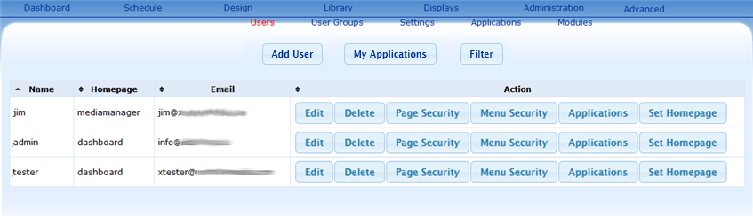
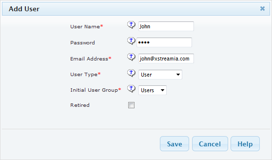
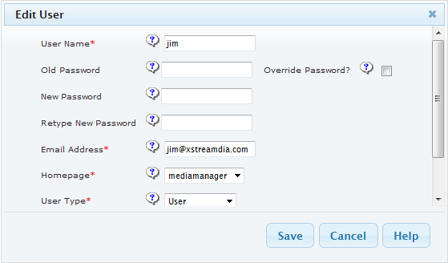

This section refers to Users Adminstration from the built in "General" user module. For information on any of the User module plugins refer to the appropriate page within this section (an overview of the available user modules can be found here).
The user admin page can be accessed from either the "Users" dashboard button - or the "Administration > Users" nagivation menu button. An example of the user page is show below.

This is the name the user will have to enter to log into Xibo.
Once a user has successfully entered their user name and password they will be taken to the homepage set here. The homepage is automatically generated from the selections on the edit user form.
The users email address will be used to send them important information from Xibo. For example if they forget their password.
Loads the "Add User" form - the details on the form will need to be entered before a user can be added to Xibo.
Opens the edit or delete form respectively. Allows the modification of user details after they have been created.
Define user access right to the various pages on the server.
Show or hide menu access for the specific user.
Set user Homepage to either dashboard or mediamanager.
To add a user click on the "Add User" button found at the top left of the User Administration page. Fill in all the fields and click "Save" to add the user.

To edit a user click on the "Edit" button on the row belonging to the user for editing. Correct the details on the form as necessary and click save to commit those changes.

To delete a user click on the delete button on the row belonging to the unwanted user. A confirm form will be opened up.
Note: Deleting a user that has media would create "orphaned" content, playlist and schedule records if that user has been active in the system. For this reason any "orphaned" items will be associated with the "xibo_admin" user created during the install process.